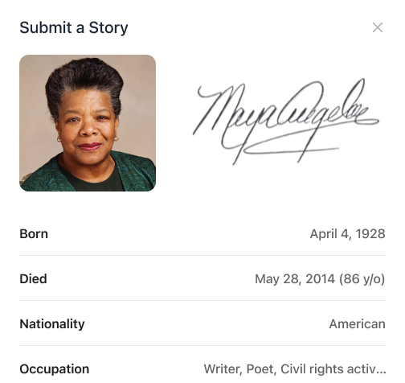
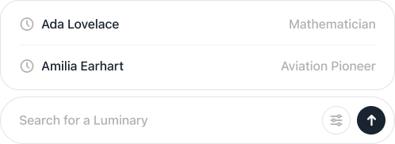
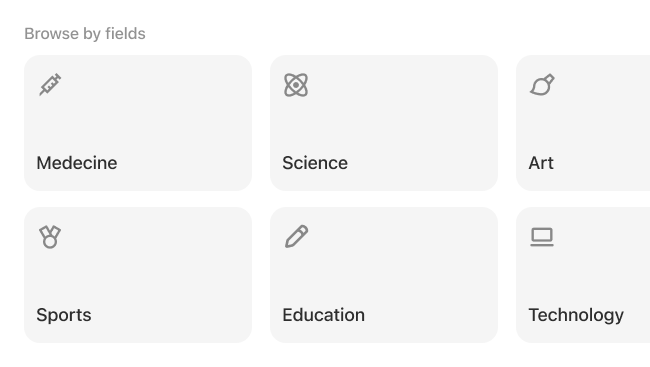

App Features
Submit
Luminary helps you search for iconic female figures based on their names fields and accolades.

Search
Luminary helps you search for iconic female figures based on their names fields and accolades.

Browse
Luminary helps you search for iconic female figures based on their names fields and accolades.

Meet the Contributors
×